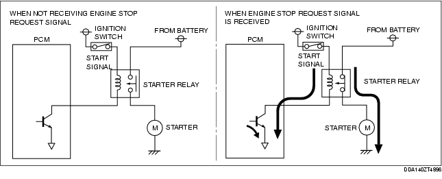

Starter cut-off control operation [ZY]
• The PCM stops energization of the starter relay according to an engine stop request from the immobilizer system.
When receiving engine stop request signal
- - The PCM does not establish a ground to the starter circuit. Therefore, the starter motor does not rotate because there is no energization of the starter relay even if the ignition switch is turned to the START position, and the engine does not start.
-
- The PCM establishes a ground to the starter circuit. Therefore, when the ignition switch is turned to the START position, the starter relay is energized and the starter motor rotates. As a result, the engine starts normally.
